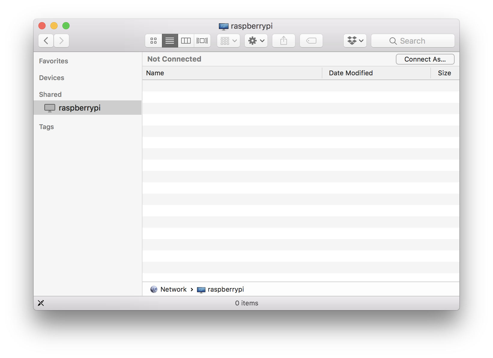
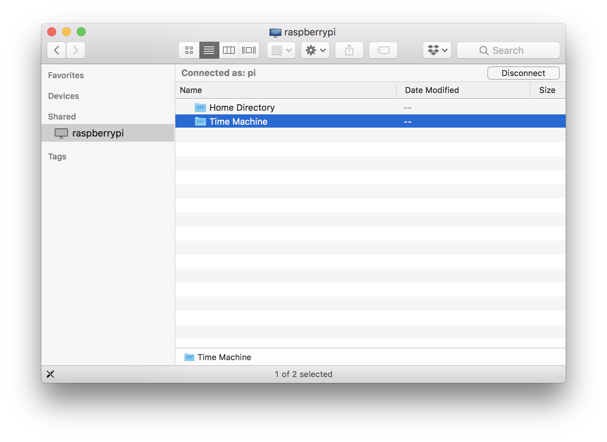
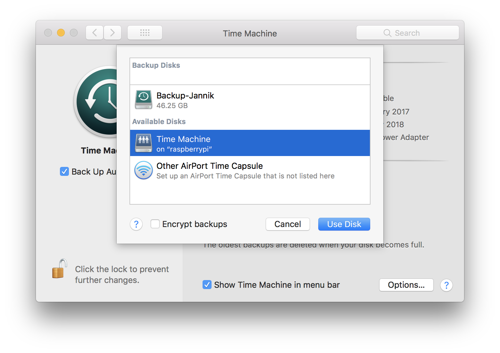

Apples Time Machine is a great backup solution, you only have to do one thing: Connect your disk from time to time.
Since that is way harder than it sounds, there’s a second option: Buy a 329€ Time Capsule and do backups over wifi!
That’s too expensive? Here’s how to build your own Time Capsule with a Raspberry Pi 3 and an external hard drive.
This guide is based on https://www.bersling.com/2017/01/02/time-capsule-time-machine-through-raspberry-pi/, but tries to be more comprehensive and also includes a few workarounds for problems I encountered.
On the pi
1. Connect USB drive to pi
2. Find drive
$ lsblk -o KNAME,TYPE,SIZE,MODEL
KNAME TYPE SIZE MODEL
sda disk 465.8G MK5065GSXF <= probably that one
mmcblk0 disk 14.9G
mmcblk0p1 part 41.5M
mmcblk0p2 part 14.9G
3. Format drive
$ sudo mkfs.ext4 /dev/sda
4. Install netatalk
$ sudo apt-get update
$ sudo apt-get upgrade
$ sudo apt-get install netatalk
5. Create a mount point
$ sudo mkdir /mnt/TimeMachine
6. Add mount to file system table (fstab)
$ sudo nano /etc/fstab
Insert the mount post at the end of the file:
/dev/sda /mnt/TimeMachine auto defaults 0 2
and exit with ctrl + x, y, enter.
7. Mount device
$ sudo mount /dev/sda
8. Make it accessible
$ sudo chmod 777 /mnt/TimeMachine
9. Make the drive known to netatalk
$ sudo nano /etc/netatalk/AppleVolumes.default
Add /mnt/TimeMachine "Time Machine" options:tm at the end, then exit with ctrl + x, y, enter
10. Restart netatalk
$ sudo service netatalk restart
11. Restart the pi
$ sudo reboot
On the Mac
1. Allow unsupported devices
In Terminal, make Time Machine show unsupported devices with
$ defaults write com.apple.systempreferences TMShowUnsupportedNetworkVolumes 1
2. Find the remote disk
Open the Finder and click on raspberrypi in the network interfaces

Connect as pi and your password. Then double click the Time Machine disk:

3. Add the disk to Time Machine
Head to the Time Machine Preferences and add the new disk:
